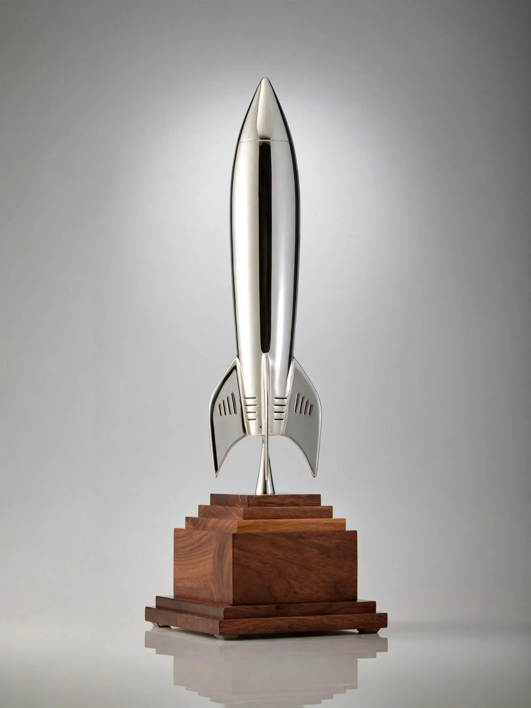

Hugo Award

Hugo Award
| Awarded for | Best science fiction or fantasy works and achievements of the previous year |
|---|---|
| Presented by | World Science Fiction Society (at Worldcon) |
| First awarded | 1953 |
| Named after | Hugo Gernsback |
The Hugo Awards are an annual set of literary awards for the best science fiction and fantasy works and achievements of the previous year, given at the World Science Fiction Convention (Worldcon) and chosen by its voting members. They are named after Hugo Gernsback, founder of the pioneering science fiction magazine Amazing Stories, and were first presented in 1953. Regarded as the genre's most prestigious fan-voted honour, the Hugo Awards are often described — alongside the professionally juried Nebula Awards — as science fiction's premier prizes. The trophy is a stylised silver rocket ship, whose base design changes annually.
History and administration
The awards are administered by the World Science Fiction Society (WSFS), an unincorporated literary society whose members are the members of each year's Worldcon. Attending and supporting members nominate works in a first round and vote by instant-runoff ballot among the finalists; any work receiving fewer votes than "No Award" in a category leaves that category unawarded. Categories have expanded from seven in 1953 to more than a dozen today. "Retro Hugos" may be awarded for years before 1953 in which no awards were given, at 50, 75, or 100 years' remove.
Categories
Current categories include Best Novel, Best Novella, Best Novelette, Best Short Story, Best Series, Best Related Work, Best Graphic Story or Comic, Best Dramatic Presentation (Long and Short Form), Best Editor (Short and Long Form), Best Professional Artist, Best Semiprozine, Best Fanzine, Best Fancast, Best Fan Writer, and Best Fan Artist; the Astounding Award for Best New Writer, administered alongside the Hugos, is not itself a Hugo. Best Novel winners range from Alfred Bester's The Demolished Man (1953) and Fritz Leiber's and Philip K. Dick's classics through multiple winners such as Lois McMaster Bujold, and recent winners including N. K. Jemisin — the first author to win Best Novel three years consecutively, for each volume of her Broken Earth trilogy (2016–2018).
Controversies
In 2013–2017, organised slate-voting campaigns (the "Sad Puppies" and "Rabid Puppies") placed blocs of recommended works on final ballots, provoking rule changes (including the "E Pluribus Hugo" nomination system) and several "No Award" outcomes in 2015. The 2023 awards, administered at the Chengdu Worldcon, generated a further scandal when leaked emails in 2024 showed that some works and authors had been ruled ineligible on political grounds without disclosure, leading to apologies and governance reforms within the WSFS.
Significance
Because they reflect the votes of the genre's most engaged readership over seventy years, the Hugo shortlists serve as a rough canon of modern science fiction and fantasy; publishers prominently advertise "Hugo Award winner" status, and winning works reliably return to print.
See also: Nebula Award · Worldcon · Science fiction · Hugo Gernsback